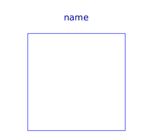

PartialMedium is a package and contains all declarations for a medium. This means that constants, models, and functions are defined that every medium is supposed to support (some of them are optional). A medium package inherits from PartialMedium and provides the equations for the medium. The details of this package are described in Modelica.Media.UsersGuide.
| Name | Description |
|---|---|
| Critical, triple, molecular and other standard data of fluid | |
| Minimal variable set that is available as input argument to every medium function | |
|  BaseProperties | Base properties (p, d, T, h, u, R, MM and, if applicable, X and Xi) of a medium |
| Return thermodynamic state as function of p, T and composition X or Xi | |
| Return thermodynamic state as function of p, h and composition X or Xi | |
| Return thermodynamic state as function of p, s and composition X or Xi | |
| Return thermodynamic state as function of d, T and composition X or Xi | |
| Return thermodynamic state so that it smoothly approximates: if x > 0 then state_a else state_b | |
| Return dynamic viscosity | |
| Return thermal conductivity | |
| Return the Prandtl number | |
| Return pressure | |
| Return temperature | |
| Return density | |
| Return specific enthalpy | |
|
|
Return specific internal energy |
| Return specific entropy | |
| Return specific Gibbs energy | |
|
|
Return specific Helmholtz energy |
|
|
Return specific heat capacity at constant pressure |
| Alias for deprecated name | |
|
|
Return specific heat capacity at constant volume |
| Alias for deprecated name | |
| Return isentropic exponent | |
| Return isentropic enthalpy | |
| Return velocity of sound | |
|
|
Return overall the isobaric expansion coefficient beta |
| Alias for isobaricExpansionCoefficient for user convenience | |
|
|
Return overall the isothermal compressibility factor |
| Alias of isothermalCompressibility for user convenience | |
| Return density derivative w.r.t. pressure at const specific enthalpy | |
| Return density derivative w.r.t. specific enthalpy at constant pressure | |
| Return density derivative w.r.t. pressure at const temperature | |
| Return density derivative w.r.t. temperature at constant pressure | |
| Return density derivative w.r.t. mass fraction | |
| Return the molar mass of the medium | |
|
|
Return specific enthalpy from p, T, and X or Xi |
| Return specific enthalpy from p, T, and X or Xi | |
| Return density from p, T, and X or Xi | |
| Return temperature from p, h, and X or Xi | |
| Return density from p, h, and X or Xi | |
| Return temperature from p,s, and X or Xi | |
| Return density from p, s, and X or Xi | |
|
|
Return specific enthalpy from p, s, and X or Xi |
| Type for mass flow rate with medium specific attributes | |